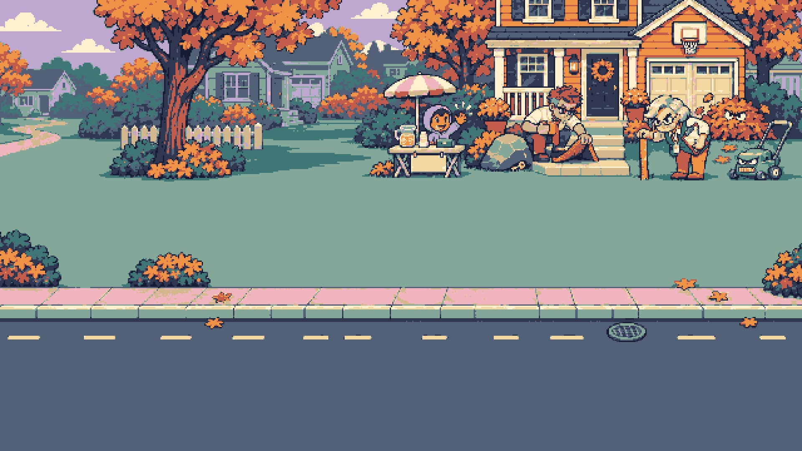
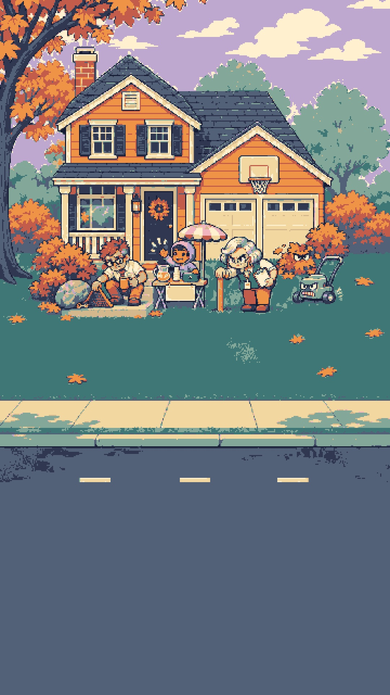
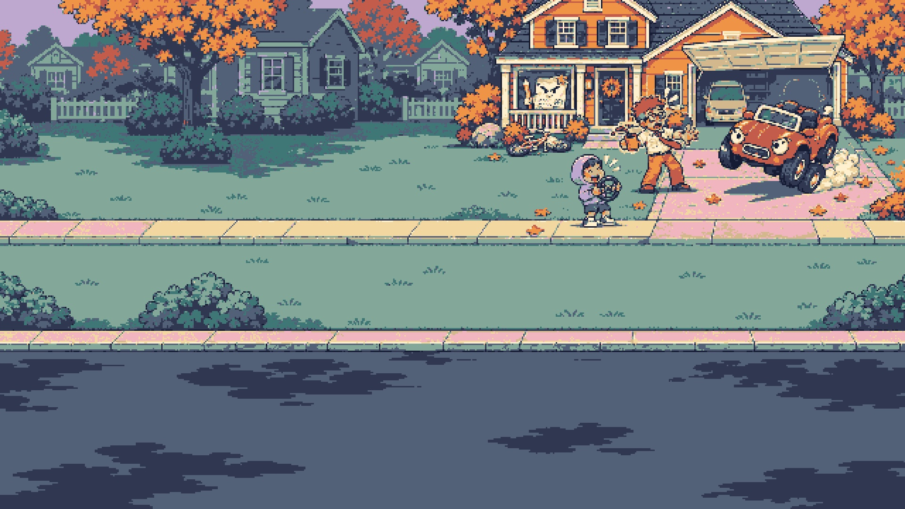
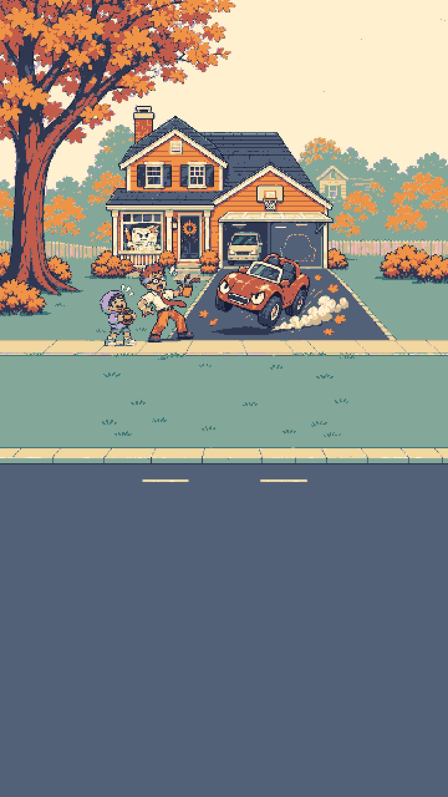
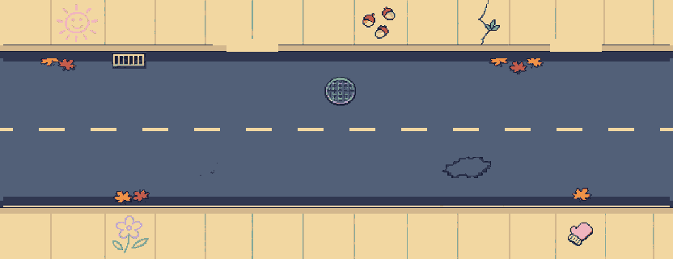
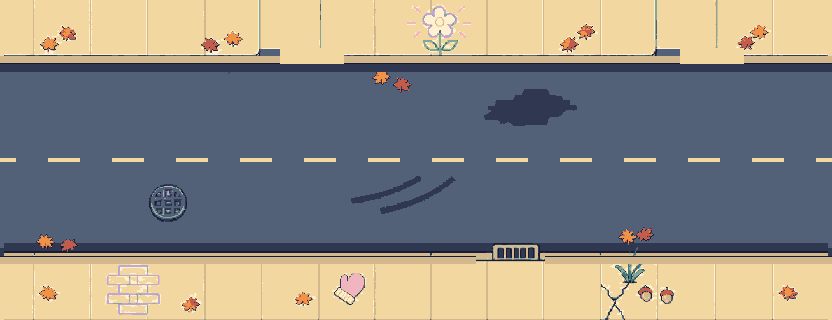
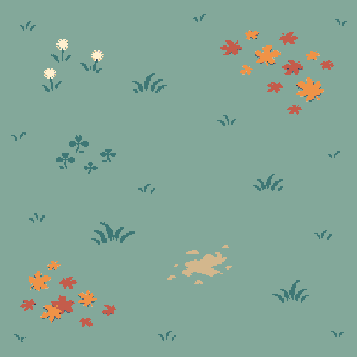
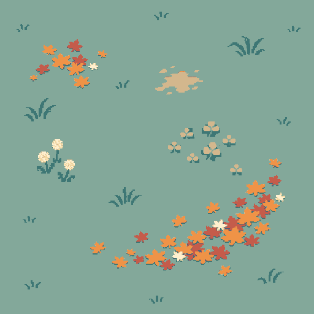
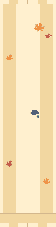

Art-only local review. Street plates use the approved 832px repeat. Existing game files and v1 art are unchanged.

desktop: zone guide check · prompt

portrait: zone guide check · prompt

desktop: zone guide check · prompt

portrait: zone guide check · prompt
Manifest · Placement notes. Aprons remain 64px wide at x280 and x680.





Mixed variants: street A/B/A · lawn A/B checker